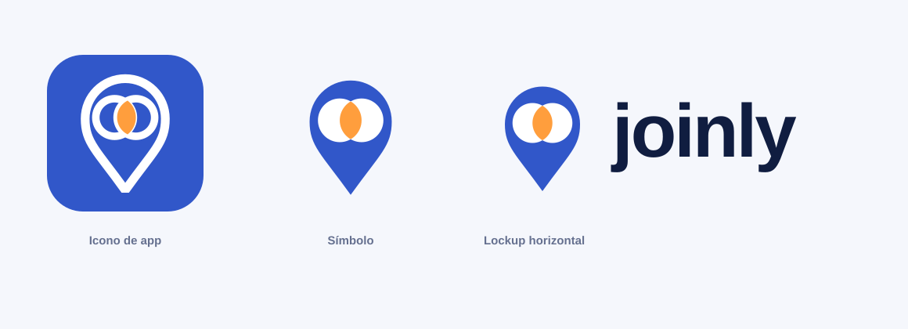
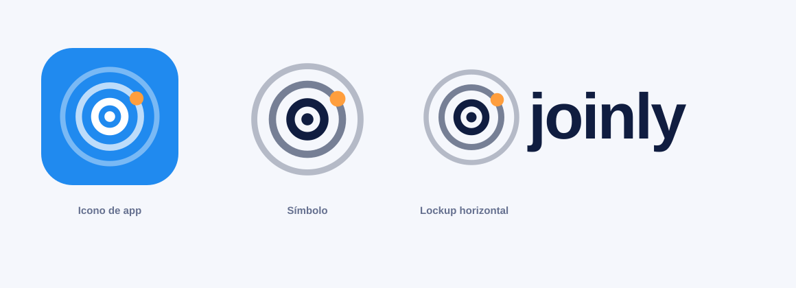
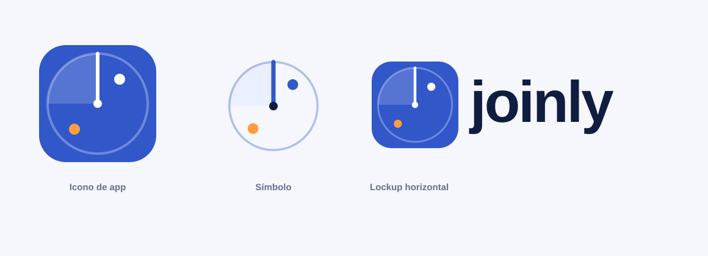

Paleta de marca: navy #101D40, azul #3157C9,
azul vivo #208AEF, acento #FF9E3D. Cada SVG trae icono de
app, símbolo y lockup. El wordmark usa fuente del sistema; el arte final debe
convertirlo a trazados. Abajo, prueba de reducción a 48 y 24 px.
La inicial de joinly con cabeza de radar y estela. Reconocible y con carácter.
Marcador de lugar cuya cabeza son dos círculos que se unen. La lente = el encuentro.

Diana de radar mínima. La opción más segura y legible a cualquier tamaño.

Una pantalla de planes a tu alrededor: barrido de radar + blips. Icono primero.
